Xinwei Sun
 |
Fudan University, School of Data Science
About me
I am now a tenure-track assistant professor in the School of Data Science, at Fudan University. I received Ph.D. in Statistics at the School of Mathematical Science, Peking University, advised by Yuan Yao and Yizhou Wang.
As a statistician, I'm on a continuous journey that intertwines statistics with a wide range of applications, including Neuroimaging and Artificial Intelligence. My commitment lies in bridging the gap between statistical methods and real-world challenges. I achieve this by immersing myself in understanding the intricacies of these applications, gaining domain-specific expertise, and weaving it into the refinement of more potent statistical theories.
Left Box
Right Box
down Box
Education & Research Stay
2019-2022 Researcher. Microsoft Research Asia (Machine Learning group).
2013-2018 Ph.D. School of Mathematical Sciences at Peking University.
2009-2013 B.S. School of Mathematical Sciences at Nankai University.
Teaching
2023 Fall, Advanced Statistical Theory.
2023 Spring, Advanced Statistical Theory.
2023 Spring, Mathematical Statistics.
2022 Fall, Advanced Regression Analysis.
Publications
(*Co-first Author/Alphabetic Order #Corresponding Author)
Split Knockoffs for Multiple Comparisons: Controlling the Directional False Discovery Rate.
Yang Cao*, Xinwei Sun*#, Yuan Yao*.
Accepted by Journal of the American Statistical Association (JASA), 2023.Controlling the False Discovery Rate in Transformational Sparsity: Split Knockoffs.
Yang Cao*, Xinwei Sun*#, Yuan Yao*.
Accepted by Journal of the Royal Statistical Society: Series B (JRSSB), 2023.Boosting with Structural Sparsity: A Differential Inclusion Approach.
Chendi Huang*, Xinwei Sun*, Jiechao Xiong*, Yuan Yao*#.
Applied and Computational Harmonic Analysis. (ACHA), 2020.Perturbed Amplitude Flow for Phase Retrieval.
Bing Gao*, Xinwei Sun*, Yang Wang*#, Zhiqiang Xu*.
IEEE Transactions on Signal Processing. (IEEE TSP), 2020.Sparse Learning in AI: A Differential Inclusion Perspective.
Xinwei Sun*.
Proceedings of the ACM Turing Award Celebration Conference-China 2023.Knockoffs-SPR: Clean Sample Selection in Learning with Noisy Labels.
Yikai Wang*, Yanwei Fu*,Xinwei Sun#.
Major revision requested at (IEEE TPAMI).Exploring Structural Sparsity of Deep Networks via Inverse Scale Spaces.
Yanwei Fu, Chen Liu, Donghao Li, Zuyuan Zhong, Xinwei Sun, Jinshan Zeng, and Yuan Yao#.
IEEE Transactions on Pattern Analysis and Machine Intelligence (IEEE TPAMI), 2023.DessiLBI: Exploring Structural Sparsity of Deep Networks via Differential Inclusion Paths.
Yanwei Fu, Chen Liu, Donghao Li, Zuyuan Zhong, Xinwei Sun, Jinshan Zeng#, Yuan Yao#.
International Conference on Machine Learning (ICML), 2020.Scalable Penalized Regression for Noise Detection in Learning with Noisy Labels.
Yikai Wang, Xinwei Sun, Yanwei Fu#.
IEEE Computer Society Conference on Computer Vision and Pattern Recognition (CVPR), 2022.iSplit LBI: Individualized Partial Ranking with Ties via Split LBI.
Qianqian Xu, Xinwei Sun, Zhiyong Yang, Xiaochun Cao, Qingming Huang, Yuan Yao.
Annual Conference on Neural Information Processing Systems (NeurIPS), 2019.MSplit LBI: Realizing Feature Selection and Dense Estimation in Few-shot and Zero-shot Learning.
Xinwei Sun*, Bo Zhao*, Yanwei Fu#, Yuan Yao#, Yizhou Wang.
International Conference on Machine Learning (ICML), 2018.TCGM:An Information-Theoretic Framework for Semi-Supervised Multi-Modality Learning.
Xinwei Sun*, Yilun Xu*, Peng Cao, Yuqing Kong#, Lingjing Hu, Shanghang Zhang#, Yizhou Wang.
European Conference on Computer Vision (ECCV Oral), 2020.Split LBI: An Iterative Regularization Path with Structural Sparsity.
Chendi Huang*, Xinwei Sun*, Jiechao Xiong*, Yuan Yao*#.
Advances in Neural Information Processing Systems (NeurIPS), 2016.FDR-HS: An Empirical Bayesian Identification of Heterogenous Features in Neuroimage Analysis.
Xinwei Sun, Lingjing Hu#, Yuan Yao#, Yizhou Wang.
Medical Image Computing and Computer Assisted Interventions Conference. (MICCAI), 2018.GSplit LBI: Taming the Procedural Bias in Neuroimaing for Disease Prediction.
Xinwei Sun, Lingjing Hu#, Yuan Yao#, Yizhou Wang.
Medical Image Computing and Computer Assisted Interventions Conference. (MICCAI), 2017.Causal Discovery from Subsampled Time Series with Proxy Variables.
Mingzhou Liu, Xinwei Sun#, Lingjing Hu, Yizhou Wang.
Conference on Neural Information Processing Systems (NeurIPS), 2023.Which Invariance should we Transfer? A Causal Minimax Learning Approach.
Mingzhou Liu, Xiangyu Zheng, Xinwei Sun#, Fang Fang, Yizhou Wang.
International Conference on Machine Learning (ICML), 2023.[PDF]Recovering Latent Causal Factor for Generalization to Distributional Shifts.
Xinwei Sun#, Botong Wu, Xiangyu Zheng, Chang Liu, Wei Chen, Tao Qin, Tie-Yan Liu.
Conference on Neural Information Processing Systems (NeurIPS), 2021.Learning Causal Semantic Representation for Out-of-Distribution Prediction.
Chang Liu#, Xinwei Sun, JindongWang, Haoyue Tang, Tao Li, Tao Qin, Wei Chen, Tie-Yan Liu.
Conference on Neural Information Processing Systems (NeurIPS), 2021.A New Causal Decomposition Paradigm towards Health Equity.
Xinwei Sun#, Xiangyu Zheng, Jim Weinstein.
International Conference on Artificial Intelligence and Statistics (AISTATS), 2023.[PDF]Learning Domain-Agnostic Representation for Disease Diagnosis.
Chu-ran Wang, Jing Li, Xinwei Sun#, Fandong Zhang, Yizhou Yu, Yizhou Wang.
International Conference on Learning Representations (ICLR), 2023.Out-of-distribution Representation Learning for Time Series Classification.
Wang Lu, Jindong Wang, Xinwei Sun, Yiqiang Chen, Xing Xie.
International Conference on Learning Representations (ICLR), 2023.PatchMix Augmentation to Identify Causal Features in Few-shot Learning.
Chengming Xu*, Chen Liu*, Xinwei Sun#, Siqian Yang, Yabiao Wang, Chengjie Wang, Yanwei Fu#.
IEEE Transactions on Pattern Analysis and Machine Intelligence (IEEE TPAMI), 2022.Bilateral Asymmetry Guided Counterfactual Generating Network for Mammogram Classification.
Churan Wang*, Jing Li*, Fandong Zhang, Xinwei Sun#, Hao Dong, Yizhou Wang#.
IEEE Transactions on Image Processing (IEEE TIP), 2021.Causal Hidden Markov Model for Time Series Disease Forecasting.
Jing Li, Botong Wu, Xinwei Sun#, Yizhou Wang.
IEEE Computer Society Conference on Computer Vision and Pattern Recognition (CVPR), 2021.Disease Forecast via Progression Learning.
Botong Wu*, Sijie Ren*, Jing Li, Xinwei Sun#, Shiming Li, Yizhou Wang.
IEEE Computer Society Conference on Computer Vision and Pattern Recognition (CVPR), 2021.CA-Net: Leveraging Contextual Features for Lung Cancer Prediction.
Mingzhou Liu, Fandong Zhang, Xinwei Sun#, Yizhou Yu, Yizhou Wang.
Medical Image Computing and Computer Assisted Interventions Conference. (MICCAI), 2021.DAE-GCN: Identifying Disease-Related Features for Disease Prediction.
Chu-ran Wang, Xinwei Sun#, Fandong Zhang, Yizhou Yu, Yizhou Wang.
Medical Image Computing and Computer Assisted Interventions Conference. (MICCAI), 2021.Learning with Unsure Data for Medical Image Diagnosis.
Botong Wu, Xinwei Sun#, Lingjing Hu, Yizhou Wang.
IEEE International Conference on Computer Vision (ICCV), 2019.Cascaded Generative and Discriminative Learning for Microcalcification Detection in Breast Mammograms.
Fandong Zhang*, Ling Luo*, Xinwei Sun, Zhen Zhou, Xiuli Li, Yizhou Yu, Yizhou Wang.
IEEE Computer Society Conference on Computer Vision and Pattern Recognition (CVPR), 2019.Zero-shot Learning via Recurrent Knowledge Transfer.
Bo Zhao, Xinwei Sun, Xiaopeng Hong, Yuan Yao, Yizhou Wang.
IEEE Winter Conference on Applications of Computer Vision (WACV), 2019.A Margin-based MLE for Crowdsourced Partial Ranking.
Qianqian Xu, Jiechao Xiong, Xinwei Sun, Zhiyong Yang, Xiaochun Cao, Qingming Huang, Yuan Yao.
ACM International Conference on Multimedia (ACM-MM), 2018.
Sparsity Learning and Statistical Inference
Causal Learning and Out-Of-Distribution Generalization
Applications.
Research
1. Sparsity Learning and Statistical Inference.
(a) Theory.
(1) Controlling the False Discovery Rate in Transformational Sparsity: Split Knockoffs. (JRSSB), 2023.
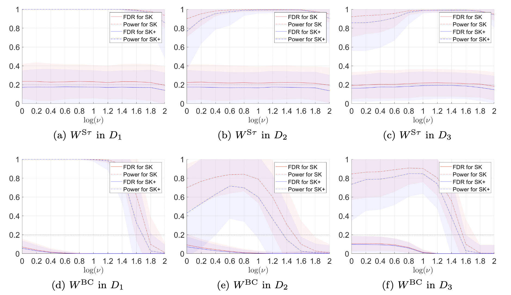
Controlling the False Discovery Rate (FDR) in a variable selection procedure is critical for reproducible discoveries, and it has been extensively studied in sparse linear models. However, it remains largely open in scenarios where the sparsity constraint is not directly imposed on the parameters but on a linear transformation of the parameters to be estimated. In this paper, we propose a data-adaptive FDR control method, called the \emph{Split Knockoff} method, for this transformational sparsity setting. The proposed method exploits both variable and data splitting. The linear transformation constraint is relaxed to its Euclidean proximity in a lifted parameter space, which yields an orthogonal design that enables the orthogonal Split Knockoff construction. To overcome the challenge that exchangeability fails due to the heterogeneous noise brought by the transformation, new inverse supermartingale structures are developed via data splitting for provable FDR control without sacrificing power.
(2) Split Knockoffs for Multiple Comparisons: Controlling the Directional False Discovery Rate. (JASA), 2023.

Multiple comparisons in hypothesis testing often encounter structural constraints in various applications. We propose an extended Split Knockoff method specifically designed to address the control of directional false discovery rate under linear transformations. Our proposed approach relaxes the stringent linear manifold constraint to its neighborhood, employing a variable splitting technique commonly used in optimization. This methodology yields an orthogonal design that benefits both power and directional false discovery rate control. By incorporating a sample splitting scheme, we achieve effective control of the directional false discovery rate, with a notable reduction to zero as the relaxed neighborhood expands.
(3) Boosting with Structural Sparsity: A Differential Inclusion Approach. (ACHA), 2020.
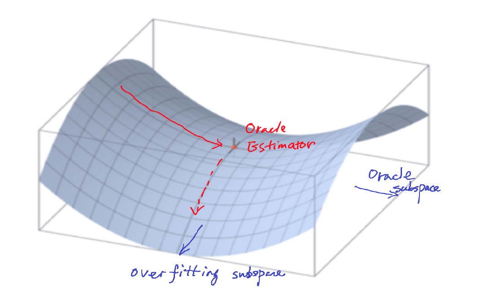
Boosting as gradient descent algorithms is one popular method in machine learning. We propose a novel Boosting-type algorithm based on restricted gradient descent with structural sparsity control whose underlying dynamics are governed by differential inclusions. We present an iterative regularization path with structural sparsity where the parameter is sparse under some linear transforms, based on variable splitting and the Linearized Bregman Iteration. Hence it is called Split LBI. Despite its simplicity, Split LBI outperforms the popular generalized Lasso in both theory and experiments. A theory of path consistency is presented that equipped with a proper early stopping, Split LBI may achieve model selection consistency under a family of Irrepresentable Conditions which can be weaker than the necessary and sufficient condition for generalized Lasso. Furthermore, some \ell_2 error bounds are also given at the minimax optimal rates.
(4) Perturbed Amplitude Flow for Phase Retrieval. (TSP), 2020.
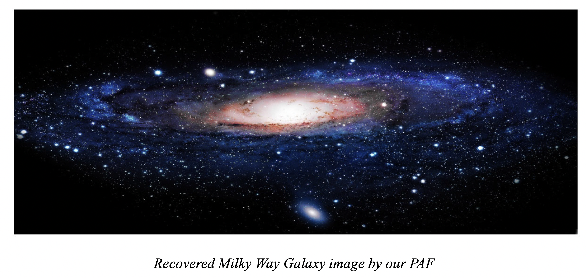
In this paper, we propose a new non-convex algorithm for solving the phase retrieval problem, The proposed algorithm solves a new proposed model, perturbed amplitude-based model, for phase retrieval, and is correspondingly named as Perturbed Amplitude Flow (PAF). We prove that PAF can recover cx (|c| = 1) under O(n) Gaussian random measurements (optimal order of measurements). Starting with a designed initial point, our PAF algorithm iteratively converges to the true solution at a linear rate for both real, and complex signals. Besides, PAF algorithm needn't any truncation or re-weighted procedure, so it enjoys simplicity for implementation.
(5) Split LBI: An Iterative Regularization Path with Structural Sparsity. (NeurIPS), 2016.
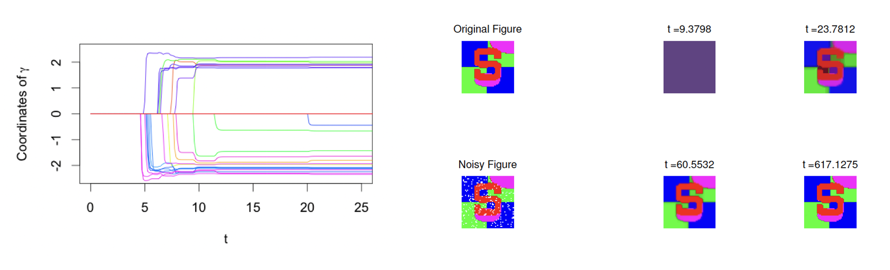
An iterative regularization path with structural sparsity is proposed in this paper based on variable splitting and the Linearized Bregman Iteration, hence called \emph{Split LBI}. Despite its simplicity, Split LBI outperforms the popular generalized Lasso in both theory and experiments. A theory of path consistency is presented that equipped with a proper early stopping, Split LBI may achieve model selection consistency under a family of Irrepresentable Conditions which can be weaker than the necessary and sufficient condition for generalized Lasso. Furthermore, some \ell_2 error bounds are also given at the minimax optimal rates.
(b) Applications (Neuroimaging and Deep Learning).
(1) GSplit LBI: Taming the Procedural Bias in Neuroimaging for Disease Prediction. (MICCAI), 2017.
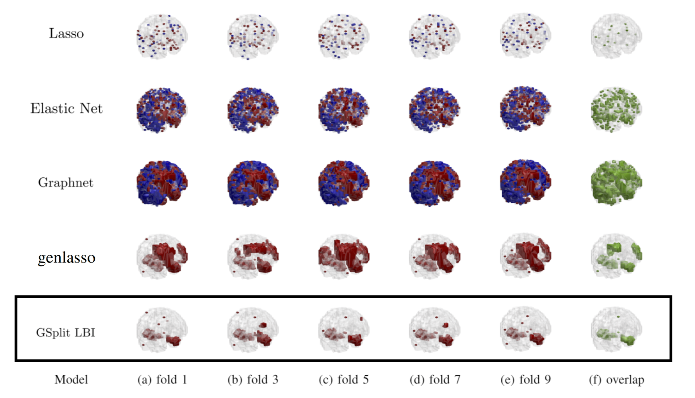
In voxel-based neuroimage analysis, lesion features have been the main focus in disease prediction due to their interpretability with respect to related diseases. However, we observe that there exists another type of features introduced during the preprocessing steps and we call them “Procedural Bias”. Besides, such bias can be leveraged to improve classification accuracy. Nevertheless, most existing models suffer from either under-fit without considering procedural bias or poor interpretability without differentiating such bias from lesion ones. In this paper, a novel dual-task algorithm namely GSplit LBI is proposed to resolve this problem. By introducing an augmented variable enforced to be structural sparsity with a variable splitting term, the estimators for prediction and selecting lesion features can be optimized separately and mutually monitored by each other following an iterative scheme. Empirical experiments have been evaluated on Alzheimer’s Disease Neuroimaging Initiative (ADNI) database.
(2) FDR-HS: An Empirical Bayesian Identification of Heterogenous Features in Neuroimage Analysis. (MICCAI), 2018.
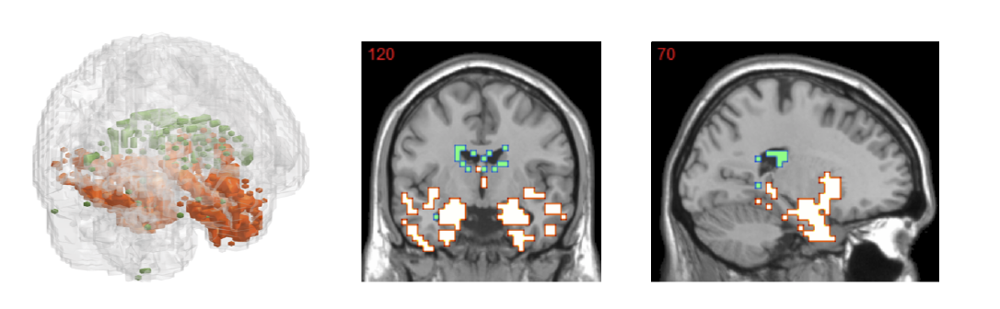
Recent studies found that in voxel-based neuroimage analysis, detecting and differentiating procedural bias" that is introduced during the preprocessing steps from lesion features, not only help boost accuracy but also can improve interpretability. To capture both procedural bias and lesion features, we propose a two-group" Empirical-Bayes method called FDR-HS (False- Discovery-Rate Heterogenous Smoothing). Such a method is able to not only avoid multicollinearity but also exploit the heterogenous spatial patterns of features. In addition, it enjoys simplicity in implementation by introducing hidden variables, which turns the problem into a convex optimization scheme and can be solved efficiently by the expectation maximization (EM) algorithm.
(3) DessiLBI: Exploring Structural Sparsity of Deep Networks via Differential Inclusion Paths. (ICML), 2020.
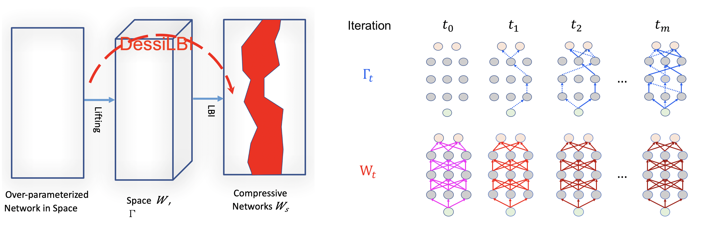
Over-parameterization is ubiquitous nowadays in training neural networks to benefit both optimizations in seeking global optima and generalization in reducing prediction error. We propose a new approach based on differential inclusions of inverse scale-spaces. Specifically, it generates a family of models from simple to complex ones that couples a pair of parameters simultaneously train over-parameterized deep models and structural sparsity on weights of fully connected and convolutional layers. Such a differential inclusion the scheme has a simple discretization, proposed as Deep structurally splitting Linearized Bregman Iteration (DessiLBI), whose global convergence analysis in deep learning is established that from any initializations, algorithmic iterations converge to a critical point of empirical risks. Experimental evidence shows that DessiLBI achieve comparable and even better performance than the competitive optimizers in exploring the structural the sparsity of several widely used backbones on the benchmark datasets. Remarkably, with early stopping, DessiLBI unveils “winning tickets” in early epochs: the effective sparse structure with comparable test accuracy to fully trained overparameterized models.
2. Causal Inference and Learning.
(1) Causal Discovery from Subsampled Time Series with Proxy Variables. (NeurIPS), 2023.
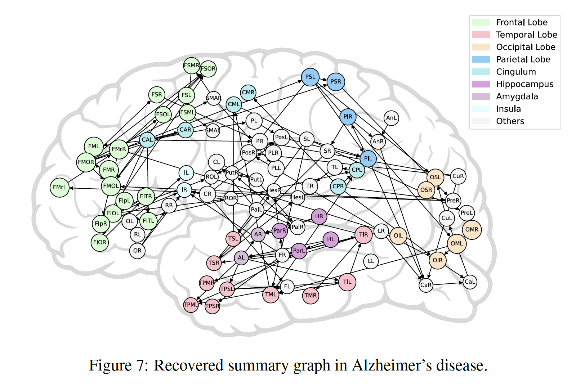
Inferring causal structures from time series data is the central interest of many scientific inquiries. We propose a constraint-based algorithm that can identify the entire causal structure from subsampled time series, without any parametric constraint. Our observation is that the challenge of subsampling arises mainly from hidden variables at the unobserved time steps. Meanwhile, every hidden variable has an observed proxy, which is essentially itself at some observable time in the future, benefiting from the temporal structure. Based on these, we can leverage the proxies to remove the bias induced by the hidden variables and hence achieve identifiability. Following this intuition, we propose a proxy-based causal discovery algorithm.
(2) Which Invariance should we Transfer? A Causal Minimax Learning Approach. (ICML), 2023.

A major barrier to deploying current machine learning models lies in their non-reliability to dataset shifts. Despite recent advances, a key question remains: which subset of this whole stable information should the model transfer, in order to achieve optimal generalization ability? To answer this question, we present a comprehensive minimax analysis from a causal perspective. Specifically, we first provide a graphical condition for the whole stable set to be optimal. When this condition fails, we surprisingly find with an example that this whole stable set, although can fully exploit stable information, is not the optimal one to transfer. To identify the optimal subset under this case, we propose to estimate the worst-case risk with a novel \emph{optimization} scheme over the intervention functions on mutable causal mechanisms. We then propose an efficient algorithm to search for the subset with minimal worst-case risk, based on a newly defined equivalence relation between stable subsets.
(3) Recovering Latent Causal Factor for Generalization to Distributional Shifts. (NeurIPS), 2023.
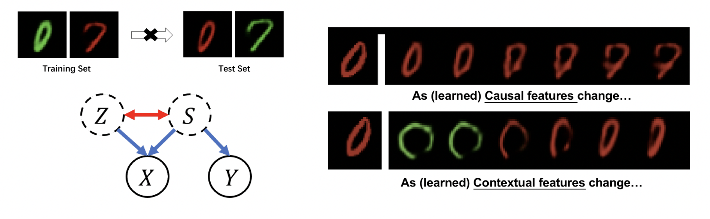
Distributional shifts between training and target domains may degrade the prediction accuracy of learned models, mainly because these models often learn features that possess only correlation rather than causal relation with the output. We propose a new method called LaCIM that specifies the underlying causal structure of the data and the source of distributional shifts, guiding us to pursue only causal factor for prediction. Specifically, the LaCIM introduces a pair of correlated latent factors: (a) causal factor and (b) others, while the extent of this correlation is governed by a domain variable that characterizes the distributional shifts. On the basis of this, we prove that the distribution of observed variables conditioning on latent variables is shift-invariant. Equipped with such an invariance, we prove that the causal factor can be recovered without mixing information from others, which induces the ground-truth predicting mechanism. We propose a Variational-Bayesian-based method to learn this invariance for prediction.
(4) Learning Causal Semantic Representation for Out-of-Distribution Prediction. (NeurIPS), 2021.
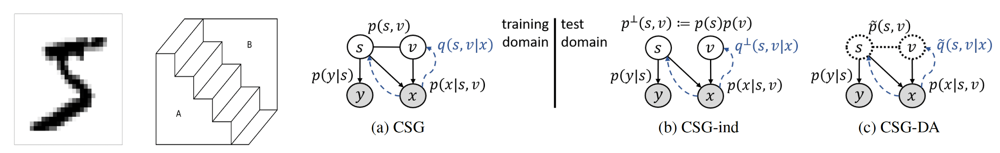
Conventional supervised learning methods, especially deep ones, are found to be sensitive to out-of-distribution (OOD) examples, largely because the learned representation mixes the semantic factor with the variation factor due to their domain-specific correlation, while only the semantic factor causes the output. To address the problem, we propose a Causal Semantic Generative model (CSG) based on causal reasoning so that the two factors are modeled separately, and develop methods for OOD prediction from a single training domain, which is common and challenging. The methods are based on the causal invariance principle, with a novel design in variational Bayes for both efficient learning and easy prediction. Theoretically, we prove that under certain conditions, CSG can identify the semantic factor by fitting training data, and this semantic identification guarantees the boundedness of OOD generalization error and the success of adaptation.
(5) Bilateral Asymmetry Guided Counterfactual Generating Network for Mammogram Classification. (TIP), 2021.
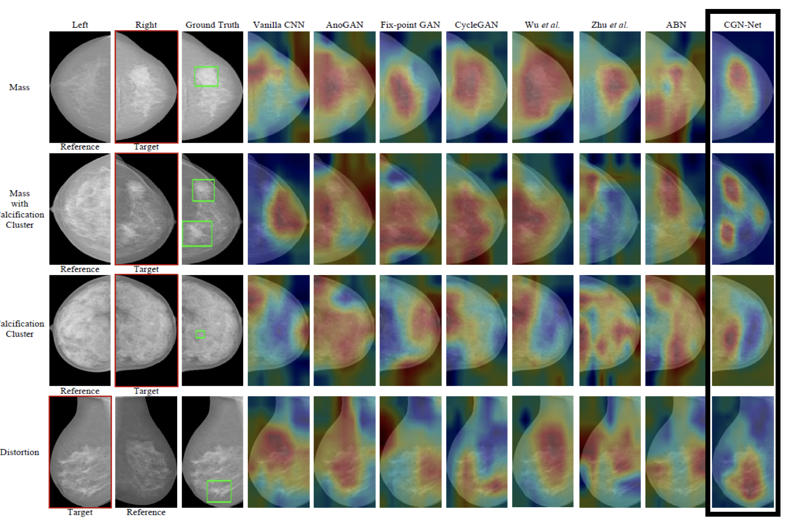
Mammogram benign or malignant classification with only image-level labels is challenging due to the absence of lesion annotations. We derive a new theoretical result based on counterfactual analysis to identify lesion areas without annotations. Specifically, by building a causal model that entails such a prior for bilateral images, we identify to optimize the distances in distribution between i) the counterfactual features and the target side’s features in lesion-free areas; and ii) the counterfactual features and the reference side’s features in lesion areas. We propose a counterfactual generative network for optimization. Our method can outperform baselines by 20% in Type-I error of lesion detection.